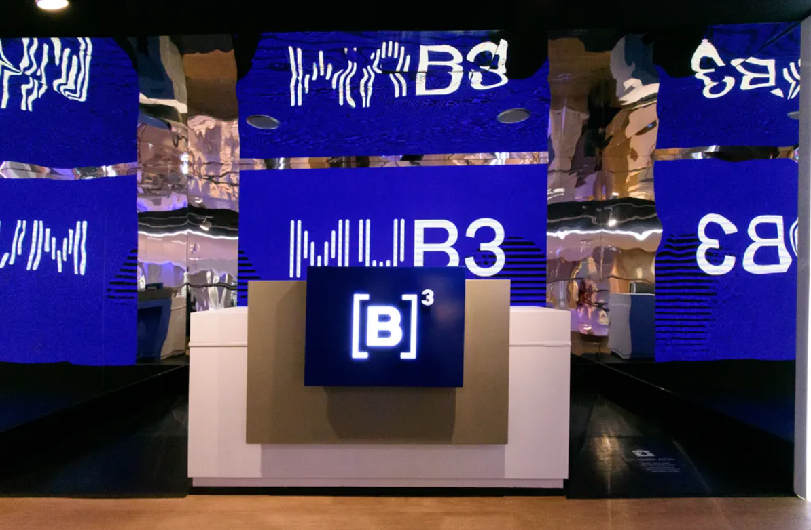

Itapevi – SP · Parque Ibirapuera – SP · Centro – São Paulo/SP
A visita técnica tem como objetivo aproximar os estudantes do ambiente organizacional real, permitindo a observação prática dos conceitos de Administração trabalhados em sala. A visita à Fábrica Cacau Show possibilita compreender a estrutura de uma cadeia produtiva industrial e o modelo de negócio por franquias.
A passagem pelo Parque Ibirapuera oferece um momento de convivência, almoço e observação do espaço urbano e cultural de São Paulo. Em seguida, a visita ao Museu da Bolsa do Brasil (MUB3) permite o contato com o funcionamento do mercado de capitais e sua importância para o financiamento das empresas.
A atividade contribui para o desenvolvimento das competências do curso, conectando as teorias da administração, o planejamento estratégico e o processo decisório a situações reais de mercado.
Locais visitados
1. Fábrica Cacau Show – Itapevi/SP
2. Parque Ibirapuera – São Paulo/SP
3. Museu da Bolsa do Brasil (MUB3) – Centro/SP
Data e horários
09 de outubro de 2026
Embarque: 07h30 – Retorno previsto: 19h30
Público-alvo
Estudantes do 2º ano do Ensino Médio
Educação Profissional Técnica – Técnico em Administração e Desenvolvimento de Sistemas
Professores responsáveis
Daniele Soares Martins
Thiago Teles Garcia
Objetivo geral: proporcionar aos alunos contato direto com dois ambientes profissionais complementares — a gestão industrial e de franquias (Cacau Show) e o mercado financeiro (MUB3) — relacionando-os aos conteúdos de planejamento estratégico, processo decisório e teorias da administração trabalhados em sala.
Habilidades desenvolvidas na Cacau Show:
Habilidades desenvolvidas no MUB3:
07h30
E. E. Profª Sarah Salvestro
Rua José Martinez Peres, 701 – Pq. Vitória Régia – Sorocaba/SP
09h00 – 10h30
Estrada Antiga de Itu, 140 – Estância São Francisco
Itapevi – SP
12h00 – 15h00
Av. Pedro Álvares Cabral, Portão 10
Parque Ibirapuera – São Paulo/SP
🍽️ Cada aluno é responsável pela própria refeição.
15h30 – 17h30
Rua XV de Novembro, 275 – Centro
São Paulo – SP
Aproximadamente 19h30
O horário poderá sofrer alteração em razão das condições de trânsito na saída de São Paulo.
A educação profissional atual está alinhada a metodologias ativas, que estimulam a reflexão, a resolução de problemas e a aplicação de conhecimentos em situações reais. O curso técnico em Administração trabalha, no componente Introdução à Administração, Legislação e Pessoas (IALP), os fundamentos de planejamento estratégico, processo decisório e teorias da administração.
A visita à Cacau Show permite observar, na prática, como uma empresa estrutura sua produção e seu modelo de expansão por franquias, enquanto a visita ao MUB3 aproxima os alunos do funcionamento do mercado de capitais — tema frequentemente abstrato quando trabalhado apenas em sala.
A atividade contribui para o desenvolvimento de competências iniciais do curso, estimulando a observação, o senso crítico e a compreensão do papel das organizações na economia.
Critérios de avaliação: participação, pontualidade e postura profissional durante as visitas; cumprimento das orientações de segurança e comportamento.
Habilidades avaliadas: relatório técnico individual ou em grupo relacionando a produção industrial e o modelo de franquias da Cacau Show, e o funcionamento do mercado financeiro apresentado no MUB3, aos conteúdos de planejamento estratégico e processo decisório trabalhados em sala.
Acesse os sites oficiais dos locais visitados. A galeria de fotos do grupo será disponibilizada em breve.